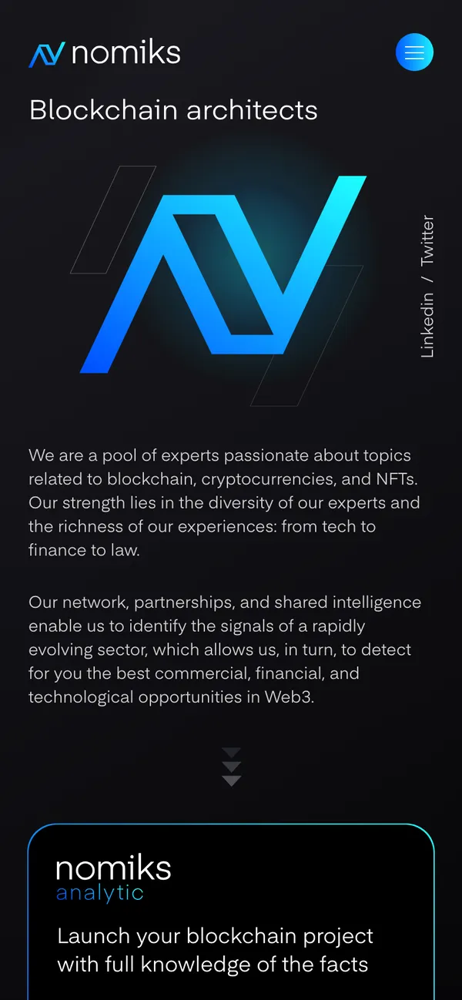
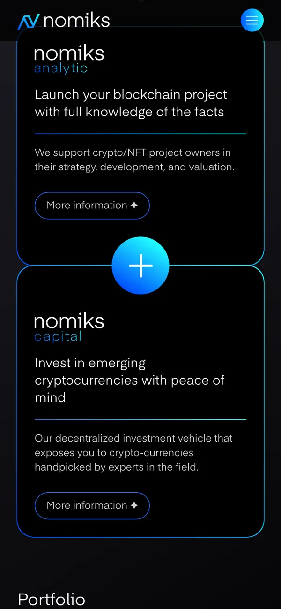
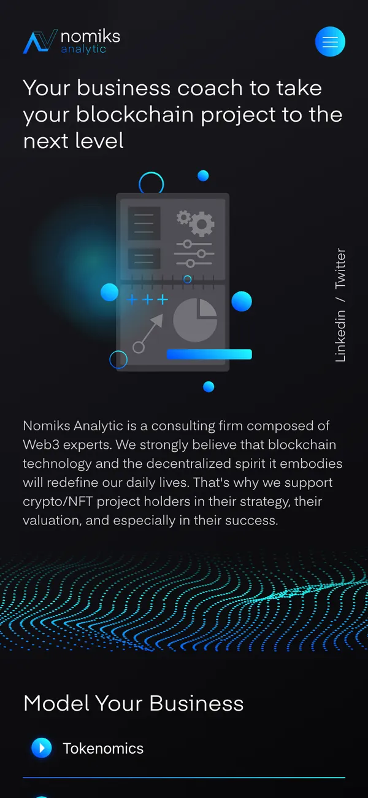

Nomiks
Site vitrine de Nomiks, une société de conseil et d'investissement autour de la blockchain : un accueil et deux pages pour ses offres, Analytic et Capital, en anglais et en français.


Un site sombre, avec du mouvement
Nomiks accompagne des projets blockchain (Nomiks Analytic) et propose des placements en cryptomonnaies (Nomiks Capital). Le designer avait imaginé un site sombre, avec des dégradés bleus, des illustrations et des éléments qui bougent au défilement.
J'ai réalisé le site de A à Z, de la création du projet Next.js à la traduction, en suivant les maquettes et les retours du designer.
Trois pages, deux langues
- 02.2022Accueil : découpage en composants React, version mobile, menu burger, parallaxe avec Rellax (désactivée sur mobile).
- 03.2022Pages Analytic et Capital : versions ordinateur et mobile, accordéons animés, en-tête fixe sur mobile, liste déroulante avec Headless UI.
- 03.2022Finitions : mentions légales, favicon, titres et descriptions pour le référencement et le partage (Open Graph).
- 04.2022Traduction : tout le site en anglais et en français avec next-i18next, et un sélecteur de langue.
Quelques écrans
Captures du site relancé en local, dans sa dernière version (mai 2022). Cliquez sur une capture pour l'agrandir.
Parallaxe au défilement
Les formes autour des illustrations ne défilent pas à la même vitesse que le texte : certaines montent plus vite, d'autres plus lentement. Fait avec Rellax, et désactivé sur mobile.
- Accueil : le grand logo
- Page Analytic : l'en-tête
- Page Analytic : la méthode en 4 étapes, avec de grosses bulles derrière les cartes



Sur mobile : l'accueil, les deux offres, la page Analytic et la FAQ
Seule de A à Z
Sur Nomiks, j'ai mené le projet seule, de la création du projet Next.js jusqu'à la mise en ligne.
Les maquettes étaient livrées en PDF, sans fichier à inspecter : j'ai appris à retrouver moi-même les tailles et les espacements pour rester fidèle au design.
La parallaxe a été la partie la plus délicate : il fallait que les formes bougent sans casser la mise en page, de l'ordinateur au mobile. Je vérifiais chaque section sur plusieurs tailles d'écran.